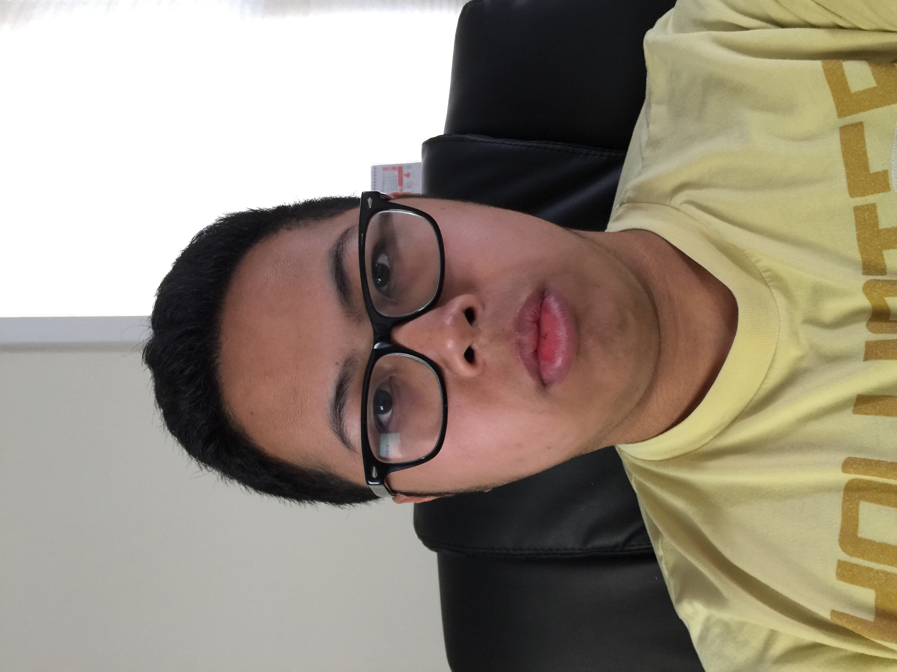

About Me

I was born on December, 12, 1999. I'm the second child out of three siblings. One older sister
and one younger brother.
I grew up in Lowell, Massachusetts but moved to Port St. Lucie, Florida at age 6. I lived
there until 12 years old and moved to Houston, Texas. Finally, I moved back to Lowell
at age 16 and now continuing education at UMASS Lowell.
Now im studying for a BS. degree in computer science. Plans are to eventually get masters degree
later in life. I like game development, problem solving, drawing, design, and animation.